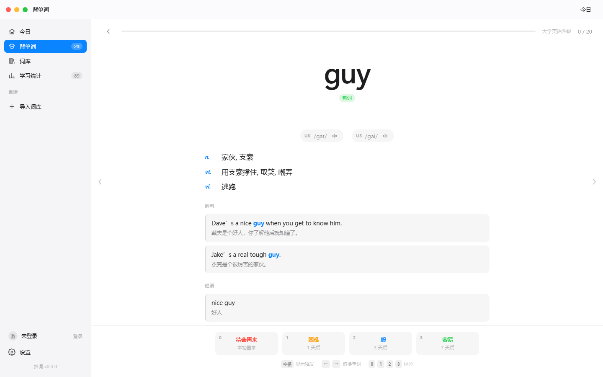
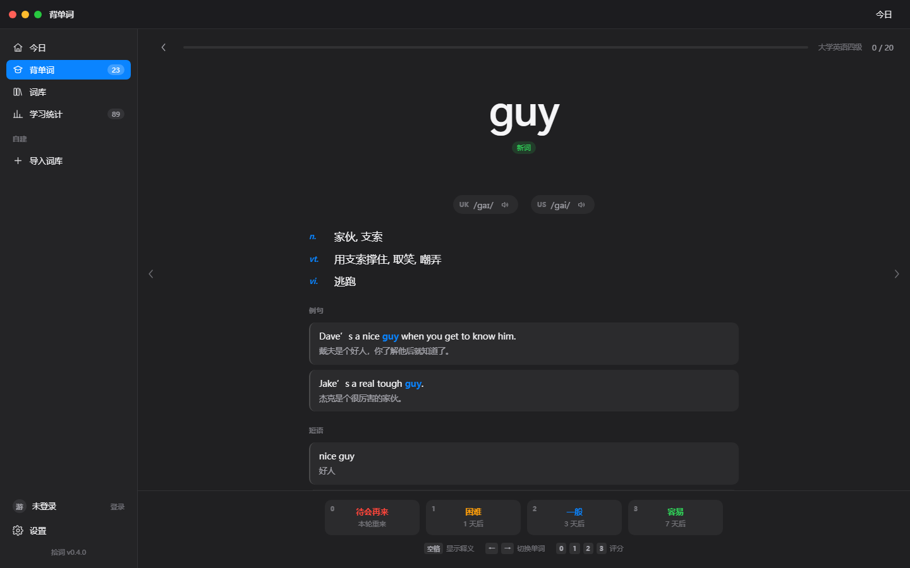
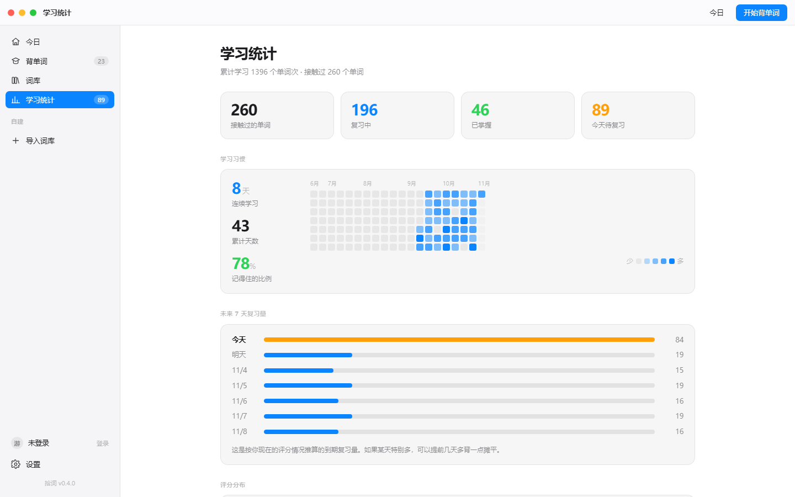
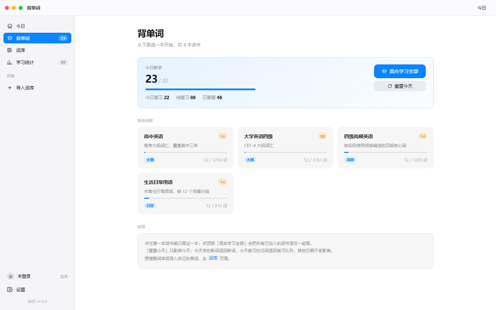
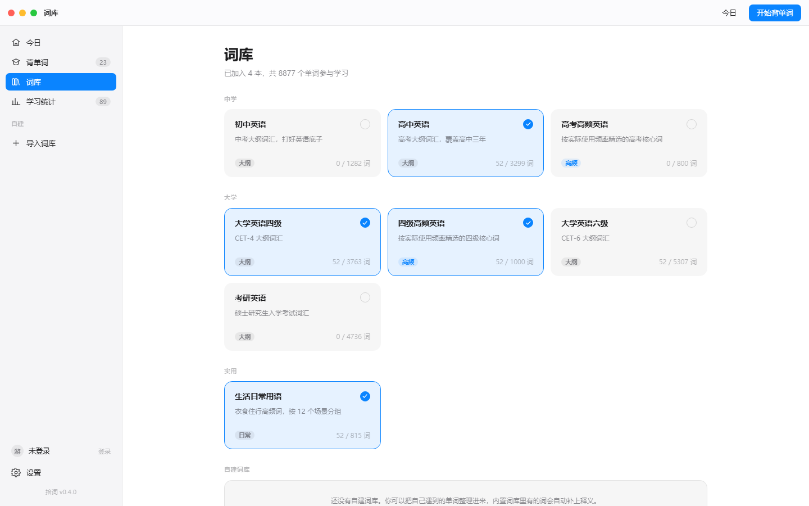

把阅读中遇到的生词收进口袋，先看词、再揭晓、按遗忘曲线安排复习。 8 本内置词书从初中到考研，也能导入你自己的单词。

打开只看到一个英文单词，别的什么都没有。想不起来就点一下，想起来了就往下走。
进入学习只显示英文单词。点下方空白或按空格，音标、释义、例句、短语、词根词缀一次性展开。
没记得的本轮末尾重来；困难 1 天、一般 3 天、容易 7 天。连续答对时间隔会逐步拉长到 120 天。
粘贴一行一个单词即可。内置词库里有的，音标、释义、例句、词根自动补齐，不用手填。
连续打卡天数、20 周学习热力图、未来 7 天复习量预测，知道自己在往哪走。
今天状态不好？把今天学过的词全部退回重来一遍，其他日期的记录完全不受影响。
评过「没记得」和「困难」的词自动进错词本，考前集中刷一遍，专攻薄弱环节。
605 个词根词缀，掌握一个能连带记住一串词。点开任意词根就能专项背它的例词。
只给中文释义，从零把单词拼出来。提示按词根来：先给前缀，再给后缀，最后才给完整答案。
26 个字母各成一库。可以按公共词库刷，也可以只刷自己学过的词，形近词一眼就能发现。
每本词书都能先翻一遍全部单词再决定学不学，支持按单词或中文释义搜索。
注册账号后，你导入的词库和学习记录都归属这个账号，切换账号互不影响。
从初中到考研全覆盖，例句覆盖率 99% 以上。也可以随时导入自己的词表。
毛玻璃侧边栏、系统字体、深浅色跟随系统。桌面端和网页端是同一套界面。



